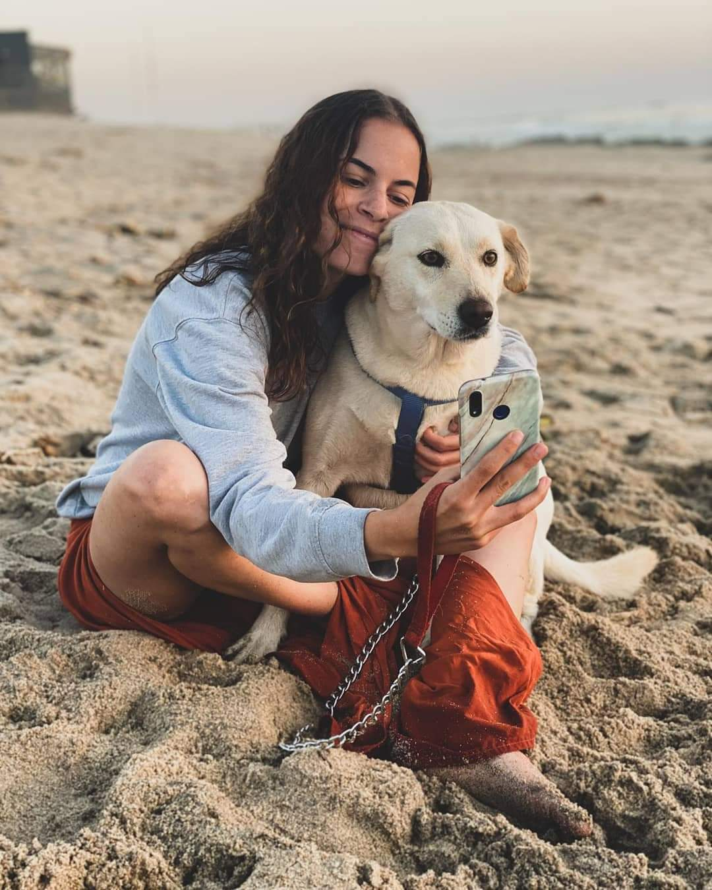

Cristina Andrade

Education
- 09/2015-12/2017 Masters Degree in Mathematics and Sciences' Education
- 09/2012 - 07/2015 Bachelor of Education
Work Experience
- 05/2021-present
Clearance Broker Associate - FedEx
- Clearance of imported goods;
- Customer Contact;
- Management of volumes;
- Team's planning and work distribution;
- Shadowing and team support;
- Reporting of daily anomalies.
- 10/2020-03/2021
Business Manager - Sector Interativo
- Service propaganda;
- Attracting new customers;
- Administrative and customer support.
- 05/2019-05/2020
Receptionist/Administrative Assistant - HPT
- 09/2017-06/2019
Teacher - Saber Educar
- 10/2016-06/2017
Teacher - Internship at Agrupamento de Escolas André Soares
Language Proficiency
- Portuguese - Native
- English - Fluent
- French - Fluent
- Spanish - Intermediate
Hobbies
- Travelling
- Crochet
- Climbing
- Hiking
- Dancing
Contact Me